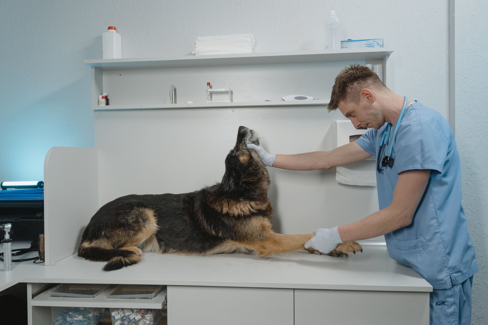
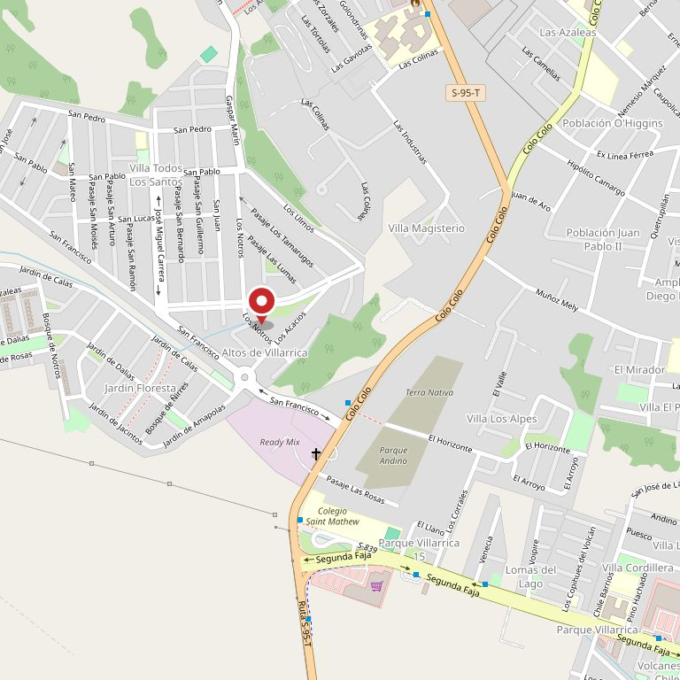
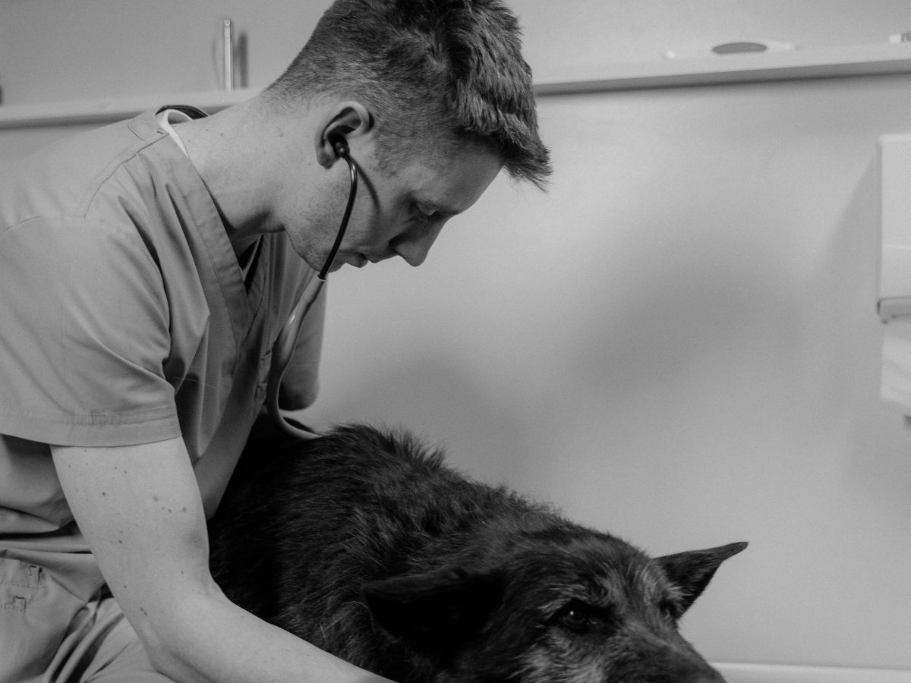
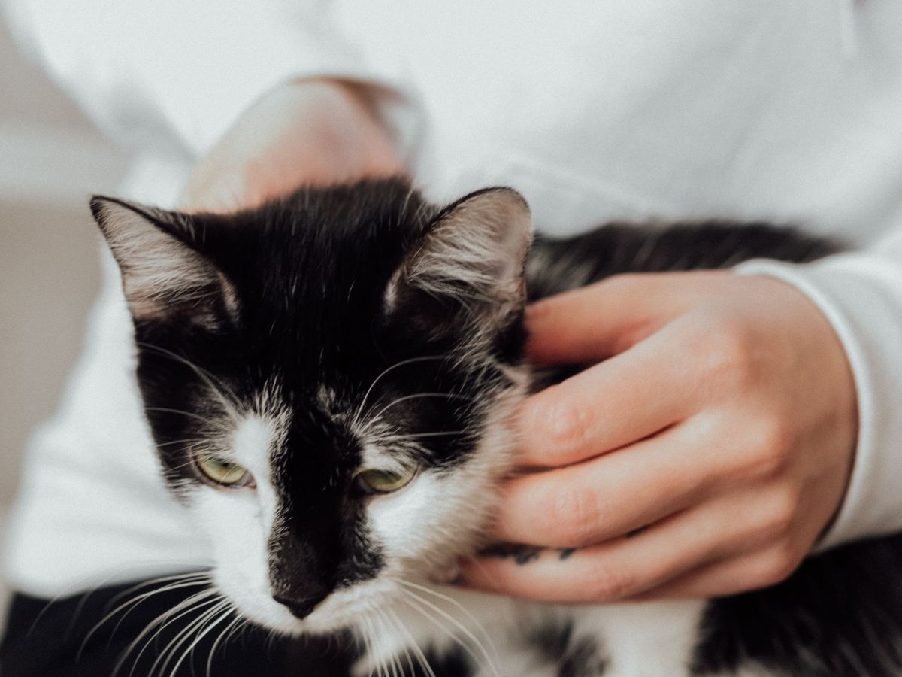
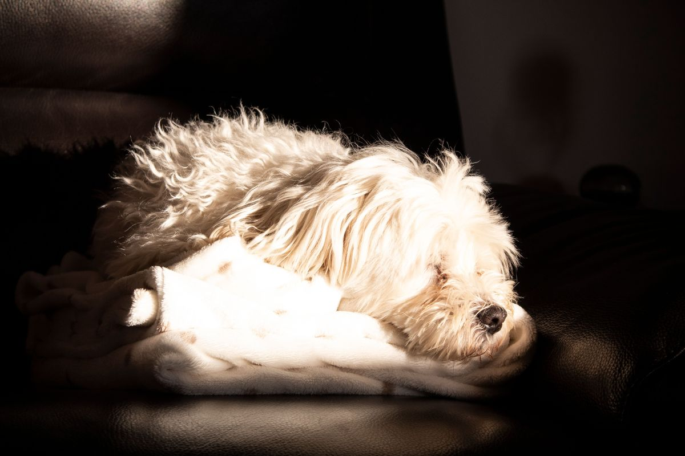
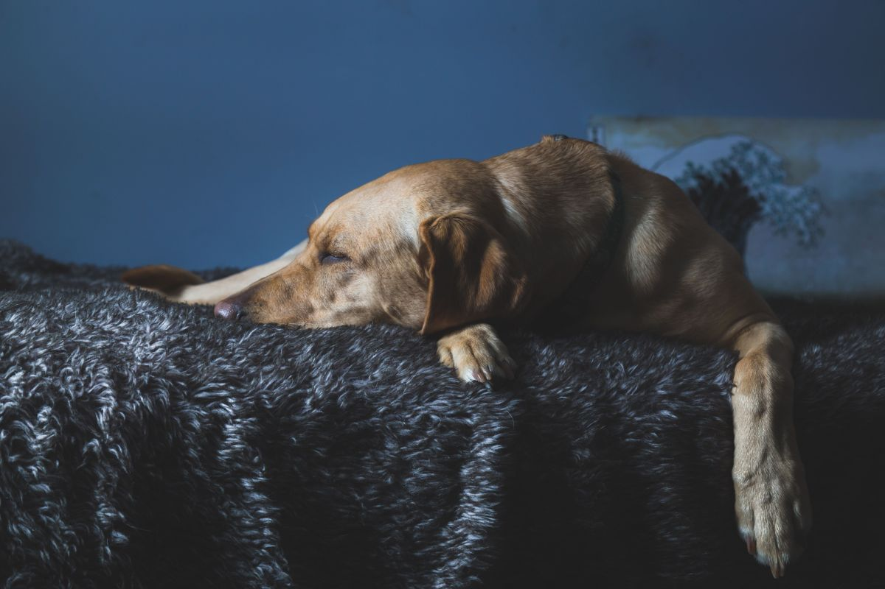
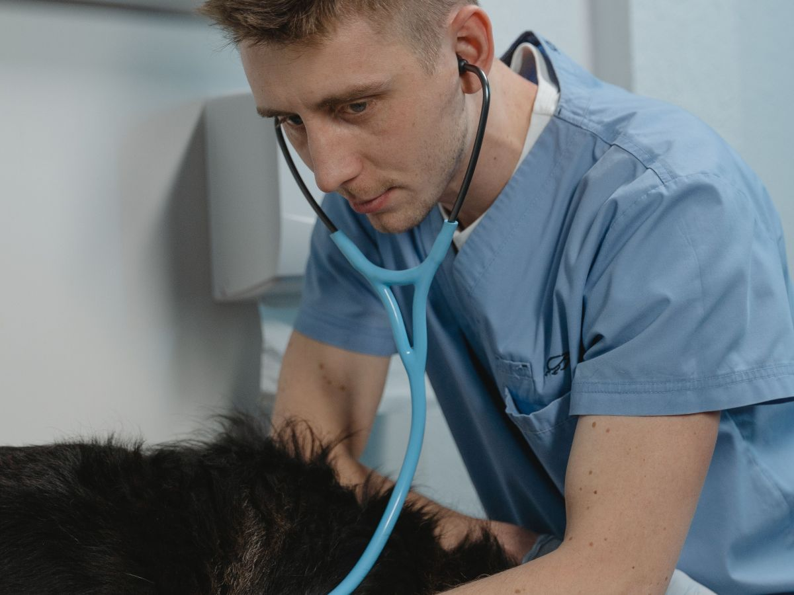

Veterinaria · Villarrica
A las tres
de la mañana
- 24
- horas falta: confirmar que siga vigente
- 365
- días
- 9 4532 6217
- llamar ahora
Su ficha de Google decía atención de 24 horas al 21 de agosto de 2026. Es el dato más valioso que tiene esta veterinaria y el que nadie encuentra cuando lo necesita — porque a esa hora nadie busca en Google Maps: busca una página que diga «llame acá».
Cuatro números, y el último es el problema
- 155 reseñas en Google · verificado el 21-08-2026
- 12 cosas que hacer y que no hacer mientras viaja, escritas más abajo
- 3 líneas para saber si se va ahora, se llama o se espera a mañana
- 0 páginas web donde hoy aparezca ese número de urgencia


Mientras llama y viaja
Los primeros
cinco minutos
Lo primero es llamar. Nada de lo que sigue reemplaza la atención veterinaria ni sirve para decidir si hace falta ir. Está escrito para los minutos en que ya va en camino, y las cosas que dice no hacer son más importantes que las que dice hacer.
Qué sí
- Llamar antes de salir. Que sepan que van en camino cambia lo que encuentra al llegar: pueden tener todo listo.
- Anotar la hora en que pasó y qué estaba haciendo el animal. Es la primera pregunta que hace cualquier veterinario.
- Llevar el envase de lo que comió o tomó, aunque esté vacío o roto. Saber qué fue exactamente cambia todo el tratamiento.
- Mantenerlo abrigado y quieto, en un lugar oscuro y sin ruido si está muy alterado.
- Moverlo lo menos posible si hubo golpe o caída, y trasladarlo sobre algo plano y firme.
- Ir acompañado si se puede: uno maneja y el otro va con el animal.
Qué no
- No provocar el vómito. Con varias sustancias hace más daño al salir que al entrar, y no siempre se sabe cuál fue.
- No dar leche. No neutraliza nada. Es una creencia muy extendida y no ayuda.
- No dar remedios de personas. Varios de los más comunes en cualquier casa son tóxicos para perros y gatos.
- No dar de comer ni de beber sin que se lo indiquen, sobre todo si hay que operar.
- No meterle las manos en la boca durante una convulsión: no se traga la lengua y sí puede morder sin querer.
- No esperar a ver si se le pasa. Es lo que más tarde hace llegar a un animal grave.
Esta lista es general y no cubre ningún caso en particular. No dice qué tiene el animal ni qué hay que darle, porque eso no se puede saber sin verlo. falta: que la veterinaria la revise y la firme — con su firma al pie, esta sección es lo que más se va a compartir de toda la página.

Mientras maneja hasta acá
Lo que se hace en el auto también cuenta
Mantenerlo abrigado y de costado, no darle agua ni comida, no medicarlo con nada de la casa, anotar la hora en que empezó. Son cuatro cosas que caben en la cabeza a las tres de la mañana y que cambian con qué llega el animal. La quinta es avisar que van en camino: una clínica prevenida gana los minutos que se pierden en la puerta.
Tres líneas honestas
Qué es urgencia
de verdad
Un turno de noche también sirve para decir «esto puede esperar a mañana». Decirlo por escrito ahorra un viaje a medianoche, una cuenta de urgencia y un mal rato — y hace que cuando sí hay que ir, se vaya sin dudar.
-
01
Se va ahora, sin pensarlo
Dificultad para respirar, convulsión, sangrado que no para, golpe fuerte, sospecha de veneno, o un animal que no responde. En estos casos el tiempo es lo único que importa.
-
02
Se llama para preguntar
Vómito o diarrea que empezó hoy, cojera nueva, no querer comer, una herida chica. Una llamada resuelve si se va ahora o mañana temprano — y esa llamada es gratis.
-
03
Puede esperar a la mañana
Un control, una vacuna atrasada, una consulta por algo que viene igual hace semanas. Nadie va a retar a quien llegue igual: pero saberlo antes evita el viaje de noche.
Ante la duda, se llama. Esta división es general y la escribe la veterinaria, no una página web. falta: que la revisen — y si prefieren que no exista, se saca: el criterio de qué es urgencia es de ellos.
Antes de cerrar la puerta
Qué llevar
cuando salga
Nada de esto vale un minuto de demora: si algo no está a mano, se va igual. Es una lista para juntar mientras el otro saca el auto.
01
El envase
De lo que comió o tomó, aunque esté vacío, roto o mordido. La etiqueta dice en dos segundos lo que si no hay que adivinar.
02
La hora anotada
Cuándo empezó y qué estaba haciendo. Escrita en el teléfono: a las tres de la mañana nadie se acuerda bien media hora después.
03
Una manta o toalla
Para abrigarlo en el auto y para levantarlo entre dos sin tomarlo en brazos. Sirve la que esté más cerca.
04
Algo plano y firme
Si hubo golpe o caída. Una tabla, una bandeja de horno, la puerta de un mueble: cualquier cosa rígida en la que quepa echado.
05
Alguien que maneje
Uno maneja y el otro va atrás con el animal. Es la diferencia entre llegar y llegar bien.
06
El carné, si está a mano
El de vacunas y cualquier remedio que esté tomando. Si hay que buscarlo, no se busca: se avisa por teléfono y listo.
Es una lista general de qué llevar, no de qué hacer. No reemplaza la llamada ni sirve para decidir si hay que ir. falta: que la veterinaria la revise — y que diga si prefiere que la gente llegue con algo más.

A las tres de la mañana no se busca en Google
Se marca el número que uno ya tenía anotado

El viaje termina acá
Lo que hay que saber antes de subir al auto
Dónde queda
y qué decir al llamar
- Dirección
- Los Notros 1350, Villarrica — de su ficha pública, al 21-08-2026
- Urgencia
- 9 4532 6217
- Turno
- 24 horas, según su ficha al 21-08-2026
- El mismo número
- Qué decir
- Qué animal es, qué pasó, a qué hora empezó y desde dónde vienen.
Lo marcado con línea de puntos es lo único que esta página no puede verificar sola. Sale de la ficha pública de Google y lo confirma la veterinaria en un minuto.

Urgencia
9 4532 6217
Es el número publicado en su ficha de Google. Esta página existe para una sola cosa: que ese número aparezca en tres segundos cuando alguien lo busca a las tres de la mañana.


Ocho imágenes del oficio
Ninguna de estas fotos es de Veterinaria Lacustre: son imágenes de bancos libres, puestas para que la página no sea texto sobre fondo plano. Cuando lleguen las suyas — la fachada de noche con la luz encendida es la que más sirve — entran acá y éstas salen. La procedencia de cada una está en imagenes/FUENTES.txt.




